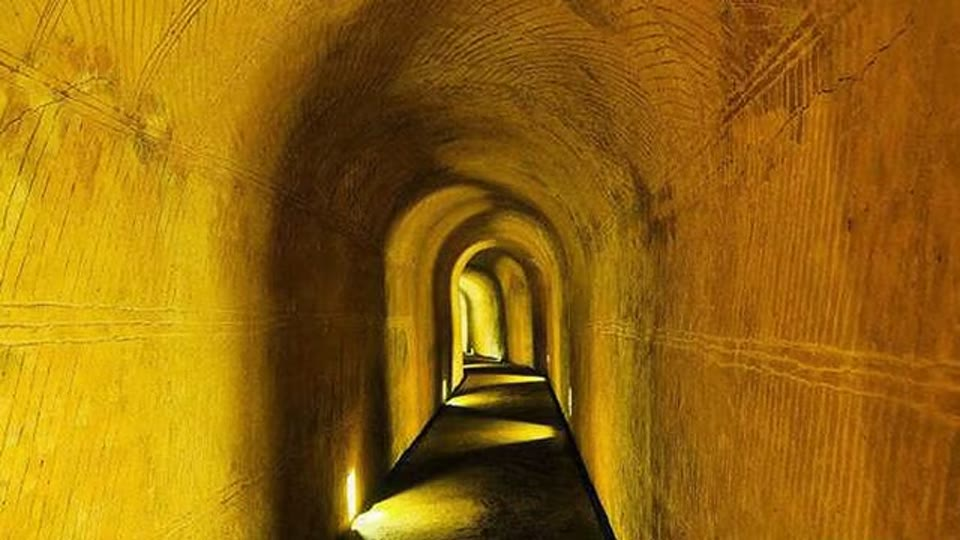
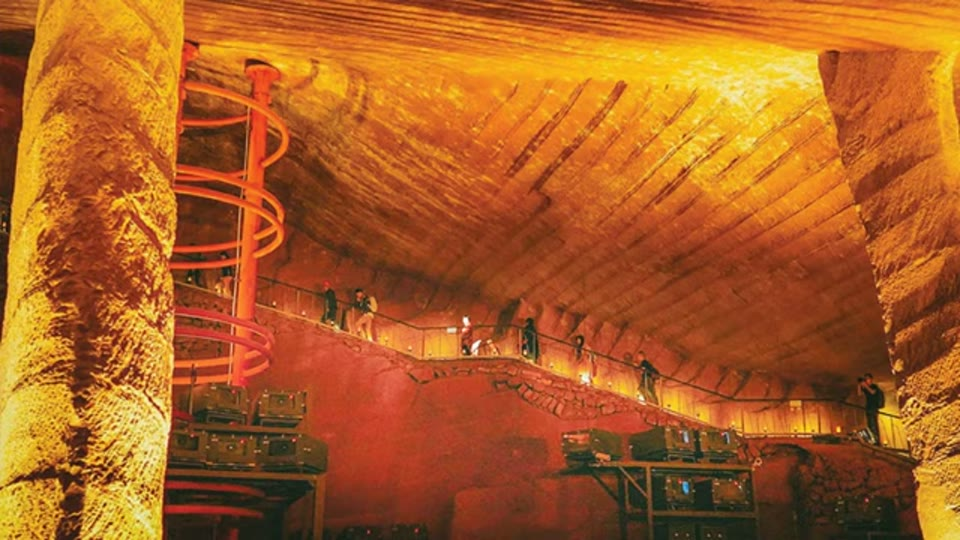

Curious Being
Longyou Caves: by a Lost Ancient Civilization with Machines?
Tina · 11 min · watch on YouTube · summarised 2026-09-27
The 2020 companion to the Yangshan tool marks entry, and the earliest of three Longyou entries here. The mature treatment is the STEAM method entry from 2025, which runs a five-factor test and concedes sites that fail it; the purpose question is in the Longyou purpose entry. This one is the site introduction.
The site
Longyou lies near a village in Zhejiang, southern China. There are no historical records of it. It was found in 1992, when local farmers pumped out what they took to be bottomless ponds and found chambers underneath [00:00–00:16, 01:22–01:48].
The numbers she gives 00:29–03:00:
- 45 caves found, 36 excavated.
- Around one million cubic metres of stone removed — she puts this at about 42% of the volume of the Great Pyramid.
- Average cave floor over 1,000 m²; ceilings up to 30 m; total floor area over 30,000 m².
- None of them interconnect. Walls between neighbouring caves hold a consistent thickness along their length, though the thickness differs from wall to wall; the thinnest are about half a metre.
- Some caves still hold 5 to 8 m of mud on the floor.
- A second cave system of the same kind lies 26 miles away and may be larger, with the same tool marks.
Her questions about it are the ordinary ones and they are fair: where did a million cubic metres of stone go, and where are the workers' dwellings for an excavation on that scale?

The caves are very large, on several levels, and were full of water until they were pumped out in 1992.
The disclosure that makes this entry worth having
04:11–04:43 She stops to warn her audience about the site's own presentation, and this is the most useful ninety seconds in the video:
- The reliefs carved on the walls and pillars are not original. Local people made them of cement after 1992, as tourist attractions, damaging the original finish.
- The arched tunnels connecting the caves are new, added by locals for visitors.
- The tool marks in those tunnels were fabricated by locals to match the originals.
Anyone looking at Longyou photographs online is therefore looking at a mixture of ancient surface and modern imitation of it, and the video says so plainly while arguing that the original marks are extraordinary. That is a warning against her own case being over-read, given without being asked for.


Much of what visitors photograph at Longyou is modern: the wall reliefs are cement added after 1992, the connecting tunnels are new, and the tool marks in those tunnels were faked to match the originals.
The marks, and the comparison
Every cave is covered floor to ceiling with the same marks: parallel bands about 60 cm wide 05:37–05:51. She compares them with a 19th–20th century salt mine in Ukraine, and then with the marks left by modern rotary drum cutters, and reads both as close matches 06:28–07:40. Her conclusion is that hand tools could not produce marks this consistent — "even if you painted these marks on the walls it wouldn't be as consistent" — so the caves were machine-cut.

The banding at Longyou matches what modern machine excavation leaves behind.
The stairs
07:49–09:29 The entrance is a square opening of about 20 m² with a drop of 4 to 5 m to the top of the stair landing, which she notes would be awkward for a person and for which no ladder evidence has been found.
The stairs themselves have an average rise of about 60 cm — roughly three and a half times a modern step — and the treads are not flat but sloped and fairly steep. She offers three readings and does not settle between them: that the form helped move excavated rock, that the entries and stairs were sized for machinery, or that the builders were three times the height of a modern adult. She labels the last one "this theory or fantasy" and leaves it.

The stairs have a rise of about 60 cm and sloped rather than flat treads, which is awkward for walking.
What you can check yourself
- The 1992 discovery and the pumping-out are documented, and the caves are open to visitors.
- Which surfaces are modern is checkable on site — cement reliefs and cut tunnels are not subtle once you are told to look, and her warning gives a reader the means to test the rest.
- The band width, the stair rise and the wall thicknesses are measurements anybody with a tape could confirm or correct. So is the claim that wall thickness stays constant along a wall.
- The mud still in the caves is 5 to 8 m deep, which is an unopened archive rather than a mystery.
- The Ukrainian salt mine and drum-cutter footage are public and can be compared directly.
What the video does not settle
- The salt mine is the wrong material for the comparison. Rock salt is about 2 to 2.5 on the Mohs scale; Longyou is sandstone. Two surfaces can carry similar banding for reasons that have nothing in common when one is cut in a mineral soft enough to scratch with a fingernail. By 2025 she qualifies this comparison herself, noting that the salt mine lacks the horizontal separating lines Longyou has.
- "A consensus is that whoever constructed Longyou had advanced knowledge on par with today's technology" 05:04–05:18 is asserted with no source, and it is not a consensus. The engineering studies published on the caves are not cited or discussed anywhere in the video.
- The band width is not reconciled with her other sites. Longyou's bands are given as 60 cm; the Aswan scoop marks she treats as the same phenomenon are given as 40 cm. Neither video mentions the other's figure.
- Nothing is measured against a hand-tool control. The claim is that hand tools cannot be this consistent; no hand-cut surface is measured to establish what consistency hand work does achieve. The video that does this properly is five years later.
- The giants speculation is raised and not withdrawn. Labelling it a fantasy is better than asserting it, but a 60 cm rise is also what you get on a stair cut for moving material rather than for walking, and that reading is offered in the same breath and not preferred.
- Where the spoil went is treated as unanswerable rather than investigated. No attempt is made to look for it.
- The dating is left at "over 2,000 years old" with no basis given in this video.
- The comparison panel does not carry the salt mine. The narration names a 19th–20th century salt mine in Ukraine; the panel itself is captioned only Modern Machine Marks, with no material, country or date on screen. A viewer who sees the image without the commentary has no way to know what is being compared.
- Her own warning applies to her own illustrations. Having said that reliefs and tunnel marks at Longyou are modern, the video then shows chamber views full of installed floodlighting, walkways, railings and staging without distinguishing, in any individual shot, which surfaces are original. The banded ceilings are the part she is arguing about, and they are the part least affected — but the entry's images carry that note rather than the video.